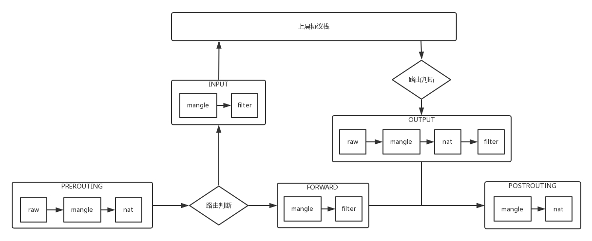
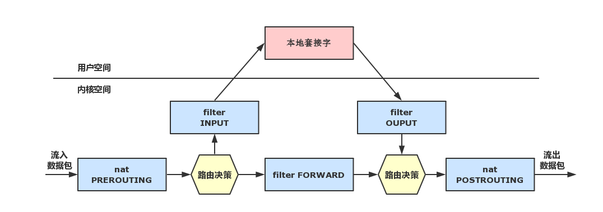

iptables使用指南
简介
Linux 系统在内核中提供了对报文数据包过滤和修改的官方项目名为 Netfilter，它指的是 Linux 内核中的一个框架，它可以用于在不同阶段将某些钩子函数（hook）作用域网络协议栈。Netfilter 本身并不对数据包进行过滤，它只是允许可以过滤数据包或修改数据包的函数挂接到内核网络协议栈中的适当位置。这些函数是可以自定义的。
iptables 是用户层的工具，它提供命令行接口，能够向 Netfilter 中添加规则策略，从而实现报文过滤，修改等功能。Linux 系统中并不止有 iptables 能够生成防火墙规则，其他的工具如 firewalld 等也能实现类似的功能。
iptables规则组成
iptables具有Filter, NAT, Mangle, Raw四种内建表,每种表有不同的链,我们可以在链中添加不同的规则。
- Filter表: Filter表是iptables的默认表，也是最常操作的表，它具有三种链:
- INPUT链 – 处理来自外部的数据。
- OUTPUT链 – 处理向外发送的数据。
- FORWARD链 – 将数据转发到本机的其他网卡设备上。
- NAT表:
- PREROUTING链 – 处理刚到达本机并在路由转发前的数据包。它会转换数据包中的目标IP地址（destination ip address），通常用于DNAT(destination NAT)。
- POSTROUTING链 – 处理即将离开本机的数据包。它会转换数据包中的源IP地址（source ip address），通常用于SNAT（source NAT）。
- OUTPUT链 – 处理本机产生的数据包。
- Mangle表和Raw一般不会用到，不再介绍


基础语法
查看规则
iptables [-L][chain][-t tables][--line-number][-nv]
-L ：列出目前的 table 的规则
-t ：后面接 table ，例如 nat 或 filter ，若省略此项目，则使用默认的 filter
-n ：不进行 IP 与 HOSTNAME 的反查，显示讯息的速度会快很多！
-v ：列出更多的信息，包括通过该规则的封包总位数、相关的网络接口等
–line-number：查看规则列表时，同时显示规则在链中的顺序号
删除规则
//清除所有规则
iptables -F [-t tables]
//删除（ –delete ）指定链中的某一条规则，按规则序号或内容确定要删除的规则
iptables -D chain [n] [-t tables]
+ **添加规则**
1. IPTABLES则会对报文执行对应的动作，通常是ACCEPT或者REJECT，报文被放行或拒绝以后，即使后面的规则也能匹配到刚才放行或拒绝的报文，也没有机会再对报文执行相应的动作了（前面规则的动作为LOG时除外），所以，针对相同服务的规则，更严格的规则应该放在前面。
2. 当规则中有多个匹配条件时，条件之间默认存在"与"的关系。如果一条规则中包含了多个匹配条件，那么报文必须同时满足这个规则中的所有匹配条件，报文才能被这条规则匹配到。
3. 在配置IPTABLES白名单时，往往会将链的默认策略设置为ACCEPT，通过在链的最后设置REJECT规则实现白名单机制，而不是将链的默认策略设置为DROP，如果将链的默认策略设置为DROP，当链中的规则被清空时，管理员的请求也将会被DROP掉。
iptables [-AI CHAIN] [-io 网络接口] [-p 协议] [-s 来源IP/网域] [-d 目标IP/网域] [-sport 源端口号][-dport 目标端口号] -j [ACCEPT|DROP|REJECT|LOG]
-A ：在末尾追加一条规则，该规则增加在原本规则的最后面。
-I ：在最前面插入一条规则。
-i ：封包所进入的那个网络接口，例如 eth0, lo 等接口。需与 INPUT 链配合；
-o ：封包所传出的那个网络接口，需与 OUTPUT 链配合；
-p 协定：设定此规则适用于哪种封包格式
主要的封包格式有： tcp, udp, icmp 及 all 。
-s 来源 IP/网域：设定此规则之封包的来源项目，可指定单纯的 IP 或包括网域，例如：
IP ：192.168.0.100
网域：192.168.0.0/24, 192.168.0.0/255.255.255.0 均可。
若规范为『不许』时，则加上 ! 即可，例如：
-s ! 192.168.100.0/24 表示不许 192.168.100.0/24 之封包来源；
-d 目标 IP/网域：同 -s ，只不过这里指的是目标的 IP 或网域。
-j ：后面接动作,主要的工作如下
ACCEPT：允许数据包通过。
DROP：直接丢弃数据包，不给任何回应信息，这时候客户端会感觉自己的请求泥牛入海了，过了超时时间才会有反应。
REJECT：拒绝数据包通过，必要时会给数据发送端一个响应的信息，客户端刚请求就会收到拒绝的信息。
SNAT：源地址转换，解决内网用户用同一个公网地址上网的问题。
MASQUERADE：会动态的将源地址转换为可用的IP地址，其实与SNAT实现的功能完全一致，都是修改源地址，只不过SNAT需要指明将报文的源地址改为哪个IP，而MASQUERADE则不用指定明确的IP，会动态的将报文的源地址修改为指定网卡上可用的IP地址
DNAT：目标地址转换。
REDIRECT：在本机做端口映射。
LOG：在/var/log/messages文件中记录日志信息，然后将数据包传递给下一条规则，也就是说除了记录以外不对数据包做任何其他操作，仍然让下一条规则去匹配。
// 设定指定链的默认策略
iptables -P CHAIN TARGET
+ **命令保存**
/etc/init.d/iptables save ##保存防火墙规则，如果不进行保存的话 重启iptables之后规则将消失
推荐将规则写入shell脚本中，定时加载脚本，这样便于统一管理。
## 扩展模块
使用模块扩展进行匹配时，必须使用 -m 指明由哪个模块进行的扩展。
**1. 多端口匹配**
> -m multiport
--sports [!] port[,port[,port:port...]] 匹配多个源端口
--dports [!] port[,port[,port:port...]] 匹配多个目标端口
--ports 匹配多个端口（无论源还是目标端口）
**2.连接数限制**
> -m connlimit
[!] --connlimit-above N 限制同时连接数量
**3. 连接速率限制**
>
-m limit
--limit RATE 单位时间连接控制，使用 '/second'，'/minute'，'/hour'，'/day' 等单位为后缀，默认是 3/hour
--limit-burst N 同一时间的连接的并发连接控制，默认为 5
**4. 连续的IP地址范围**
>
-m iprange
--src-range 192.168.1.100-192.168.1.200 源地址所在范围
--dst-range 目标地址所在范围
**5. string扩展模块**
>
使用string扩展模块，可以指定要匹配的字符串，如果报文中包含对应的字符串，则符合匹配条件。
--algo：用于指定匹配算法，可选的算法有bm与kmp，此选项为必须选项，我们不用纠结于选择哪个算法，但是我们必须指定一个。
--string：用于指定需要匹配的字符串。
**6. time扩展模块**
>
我们可以通过time扩展模块，根据时间段区匹配报文，如果报文到达的时间在指定的时间范围以内，则符合匹配条件。
**7. tcp扩展模块**
> -m tcp
--sport 用于匹配tcp协议报文的源端口，可以使用冒号指定一个连续的端口范围
--dport 用于匹配tcp协议报文的目标端口，可以使用冒号指定一个连续的端口范围
--tcp-flags 用于匹配报文的tcp头的标志位
iptables -t filter -I INPUT -p tcp -m tcp --dport 22 --tcp-flags SYN,ACK,FIN,RST,URG,PSH SYN -j REJECT
--syn 用于匹配tcp新建连接的请求报文，相当于使用"--tcp-flags SYN,RST,ACK,FIN SYN"
**8. state**
>在TCP/IP协议簇中，UDP和ICMP是没有所谓的连接的，但是对于state模块来说，tcp报文、udp报文、icmp报文都是有连接状态的，我们可以这样认为，对于state模块而言，只要两台机器在"你来我往"的通信，就算建立起了连接.
对于state模块的连接而言，"连接"其中的报文可以分为5种状态：
NEW：连接中的第一个包，状态就是NEW，我们可以理解为新连接的第一个包的状态为NEW。
ESTABLISHED：我们可以把NEW状态包后面的包的状态理解为ESTABLISHED，表示连接已建立。
RELATED:
INVALID：如果一个包没有办法被识别，或者这个包没有任何状态，那么这个包的状态就是INVALID，我们可以主动屏蔽状态为INVALID的报文。报文与其它连接中中的报文有关系。
UNTRACKED：报文的状态为untracked时，表示报文未被追踪，当报文的状态为Untracked时通常表示无法找到相关的连接。
iptables -t filter -I INPUT -m state --state RELATED,ESTABLISHED -j ACCEPT
iptables 0f filter -A INPUT -j REJECT
## 自定义链
1. 如果INPUT链中存放了200条规则，这200条规则有针对httpd服务的，有针对sshd服务的，有针对私网IP的，有针对公网IP的。
2. 我们可以自定义一条链，链名叫IN_WEB，我们可以将所有针对80端口的入站规则都写入到这条自定义链中，当以后想要修改针对web服务的入站规则时，就直接修改IN_WEB链中的规则就好了
3. 删除自定义链需要满足两个条件
+ 自定义链没有被引用
+ 自定义链中没有任何规则
//在filter表中创建IN_WEB自定义链
iptables -t filter -N IN_WEB
// 在INPUT链中引用刚才创建的自定义链
iptables -t filter -I INPUT -p tcp --dport 80 -j IN_WEB
// 为 IN_WEB自定义链添加规则
iptables -t filter -I IN_WEB -s 192.168.1.139 -j REJECT
// 将IN_WEB自定义链重命名为WEB
iptables -E IN_WEB WEB
// 删除引用计数为0并且不包含任何规则的WEB链
iptables -X WEB
## 实例演示
### 场景一
+ 对所有地址开放本机的tcp(80、22、10-21)端口的访问
+ 允许对所有的地址开放ICMP协议数据包访问
+ 其它未被访问的端口则禁止访问
//清空之前的规则
iptables -F
//filter 表 INPUT、OUTPUT、FORWARD 链的默认策略都是ACCEPT
//开放tcp:80、22、10-21端口
iptables -I INPUT -p tcp --dport 80 -j ACCEPT
iptables -I INPUT -p tcp --dport 22 -j ACCEPT
iptables -I INPUT -p tcp --dport 10:21 -j ACCEPT
//允许ICMP协议的数据包访问
iptables -I INPUT -p icmp -j ACCEPT
//其它数据包REJECT,一定要把这条规则加在最后面
iptables -A INPUT -j REJECT
//本机需要访问本机，我们制定上面的规则时没有指定-i参数，所以默认是对eth0网卡做的设置，我们需要单独设置接收 -i lo网卡上的数据包
iptables -I INPUT -i lo -j ACCEPT
//我们需要对主机主动发起的网络连接放行，否则主机不能访问其它机器
iptables -I INPUT -m state --state ESTABLISHED,RELATED -j ACCEPT
### 场景二
+ 只允许IP地址为45.78.33.159的机器访问主机的80端口
+ 对于非80端口不做限制
//清空之前的规则
iptables -F
//filter 表 INPUT、OUTPUT、FORWARD 链的默认策略都是ACCEPT
iptables -I INPUT -p TCP --dport 80 -j DROP
iptables -I INPUT -s 45.78.33.159 -p TCP --dport 80 -j ACCEPT
### iptables防CC攻击
//限制每一个客户端IP的并发连接数
iptables -I INPUT -p tcp -dport 80 -m connlimit -connlimit-above 10 -j REJECT
//限速控制流量
iptables -A INPUT -p tcp --dport 80 -m limit --limit 25/minute --limit-burst 100 -j ACCEPT
--litmit 25/minute 指示每分钟限制最大连接数为25
--litmit-burst 100 指示当总连接数超过100时，启动 litmit/minute 限制
### 共享公网IP，访问互联网
// NAT功能能够正常使用，需要开启Linux主机的核心转发功能。
echo 1 > /proc/sys/net/ipv4/ip_forward
// 配置SNAT，可以隐藏网内主机的IP地址，也可以共享公网IP，访问互联网，如果只是共享IP的话，只配置如下SNAT规则即可。
// 将源IP是 10.1.0.0/16 内的请求的IP地址替换为公网IP(端口也会替换)
// 不需要配置DNAT就能实现正常上网，
iptables -t nat -A POSTROUTING -s 10.1.0.0/16 -j SNAT --to-source 公网IP
// 如果公网IP是动态获取的，不是固定的，则可以使用MASQUERADE进行动态的SNAT操作，如下命令表示将10.1网段的报文的源IP修改为eth0网卡中可用的地址。
iptables -t nat -A POSTROUTING -s 10.1.0.0/16 -o eth0 -j MASQUERADE
### 通过公网IP访问局域网内的服务
理论上来说，只要配置DNAT规则，不需要对应的SNAT规则即可达到DNAT效果。
但是在测试DNAT时，对应SNAT规则也需要配置，才能正常DNAT，可以先尝试只配置DNAT规则，如果无法正常DNAT，再尝试添加对应的SNAT规则，SNAT规则配置一条即可，DNAT规则需要根据实际情况配置不同的DNAT规则。
iptables -t nat -I PREROUTING -d 公网IP -p tcp --dport 公网端口 -j DNAT --to-destination 私网IP:端口号
iptables -t nat -A POSTROUTING -s 10.1.0.0/16 -j SNAT --to-source 公网IP
## 参考资料
[Linux 防火墙和 iptables](http://liaoph.com/iptables/)
[慕课网-用iptables搭建一套强大的安全防护盾](http://www.imooc.com/learn/389)
[iptables详细教程：基础、架构、清空规则、追加规则、应用实例](http://lesca.me/archives/iptables-tutorial-structures-configuratios-examples.html)
[iptables详解](https://www.zsythink.net/archives/category/%E8%BF%90%E7%BB%B4%E7%9B%B8%E5%85%B3/iptables/)